خطی الجبرا
Jim Hefferon
خطی الجبرا

Jim Hefferon
چوتھا ایڈیشن
hefferon.net/linearalgebra
علامتاں
| TeX, TeX, TeX | حقیقی عدد، مثبت حقیقی عدد، حقیقی عدداں دے TeX-تُپل |
| TeX, TeX | قدرتی عدد TeX، مرکب عدد |
| TeX, TeX | کھلا وقفہ، بند وقفہ |
| TeX | ترتیب وار سلسلہ (اک فہرست جہدے وچ ترتیب اہم ہُندی اے) |
| TeX | قطار TeX تے کالم TeX وچ میٹرکس TeX دا اندراج |
| TeX | ویکٹر فضاواں |
| TeX, TeX, TeX | ویکٹر، صفر ویکٹر، فضا TeX دا صفر ویکٹر |
| TeX, TeX | درجہ TeX والیاں کثیرحدیاں دی فضا، TeX میٹرکساں |
| TeX | اک سیٹ دا پھیلاؤ |
| TeX, TeX | بنیاد، بنیاد دے ویکٹر |
| TeX | TeX لئی معیاری بنیاد |
| TeX | ہم ساخت فضاواں |
| TeX | ذیلی فضاواں دا سِدھا مجموعہ |
| TeX | ہومومارفزم (خطی نقشے) |
| TeX | تبدیلیاں (اک فضا توں اوہو فضا ول خطی نقشے) |
| TeX, TeX | ویکٹر دی، نقشے دی نمائندگی |
| TeX یا TeX, TeX یا TeX | صفر میٹرکس، شناختی میٹرکس |
| TeX | میٹرکس دا ڈیٹرمننٹ |
| TeX | نقشے دی حاصل فضا، صفر فضا |
| TeX | تعمیم شدہ حاصل فضا تے تعمیم شدہ صفر فضا |
یونانی حرف تے اوہناں دے اُچار
| حرف | ناں | حرف | ناں |
|---|---|---|---|
| TeX | الفا AL-fuh | TeX | نیو NEW |
| TeX | بیٹا BAY-tuh | TeX, TeX | کسائی KSIGH |
| TeX, TeX | گیما GAM-muh | TeX | اومیکرون OM-uh-CRON |
| TeX, TeX | ڈیلٹا DEL-tuh | TeX, TeX | پائی PIE |
| TeX | ایپسلان EP-suh-lon | TeX | رو ROW |
| TeX | زیٹا ZAY-tuh | TeX, TeX | سگما SIG-muh |
| TeX | ایٹا AY-tuh | TeX | تاؤ TOW (جیویں انگریزی cow وچ) |
| TeX, TeX | تھیٹا THAY-tuh | TeX, TeX | اُپسلان OOP-suh-LON |
| TeX | آیوٹا eye-OH-tuh | TeX, TeX | فائی FEE، یا FI (جیویں انگریزی hi وچ) |
| TeX | کیپا KAP-uh | TeX | کائی KI (جیویں انگریزی hi وچ) |
| TeX, TeX | لیمبڈا LAM-duh | TeX, TeX | سائی SIGH، یا PSIGH |
| TeX | میو MEW | TeX, TeX | اومیگا oh-MAY-guh |
ایتھے اوہ وڈے حرف وکھائے گئے نیں جہڑے رومن وڈے حرفاں توں وکھرے نیں۔
مُڈھلی گل
ایہہ کتاب طالب علماں نوں امریکہ وچ انڈرگریجویٹ سطح دے خطی الجبرا دے عام پہلے کورس دے مواد اُتے پوری پکڑ پاؤن وچ مدد دیندی اے۔
مواد ایس لحاظ نال عام کورساں والا اے کہ ایس وچ گاوسی تخفیف، ویکٹر فضاواں، خطی نقشے، ڈیٹرمننٹ، آئگن قدراں تے آئگن ویکٹر شامل نیں۔ کتاب دے پڑھنے والے وی عام طور اُتے اوہی نیں: ڈگری دے دوجے یا تیجے سال دے طالب علم، جنہاں نے عموماً گھٹ توں گھٹ اک سمسٹر کیلکولس پڑھی ہُندی اے۔ طالب علماں دی مدد لئی ایہہ کتاب سمجھ نوں ہولی ہولی ودھاؤن والا طریقہ اپناؤندی اے—ایس دی پیشکش وچ کئی مثالاں نال ایہہ گل اُبھاری گئی اے کہ خیال دی لوڑ کیوں پئی تے اوہ قدرتی طور اُتے کیویں سامنے آندا اے۔
سمجھ نوں ہولی ہولی ودھاؤن والا ایہہ طریقہ ایس کتاب دی سبھ توں وڈی خوبی اے، ایس لئی میں ایہدی ہور گل کراں گا۔ ریاضی دے تعلیمی پروگرام دے مُڈھلے کورساں وچ نظریے اُتے گھٹ تے حساب کرن اُتے ودھ زور ہُندا اے۔ اگلے کورس ریاضی دی پختگی منگدے نیں: وکھ وکھ قسماں دیاں دلیلّاں دے نال چلن دی صلاحیت، اوہناں گلاں نال واقفیت جہڑیاں کئی ریاضی کھوجاں دی بنیاد نیں—جیویں سیٹاں تے فنکشناں بارے مُڈھلے حقائق—تے کجھ حد تیکر آپ پڑھ سکّن تے سوچ سکّن دی صلاحیت۔ کجھ پروگراماں وچ ایہہ پختگی پیدا کرن لئی وکھرا کورس ہُندا اے، پر ہر صورت وچ خطی الجبرا دا کورس ایس بدلاوے اُتے کم کرن لئی بہت مناسب تھاں اے۔ ایہہ پروگرام وچ اینا چھیتی آ جاندا اے کہ ایتھے کیتی ترقی اگوں کم آؤندی اے، پر نال ای اینا اگے وی ہُندا اے کہ جماعت وچ صرف اوہ طالب علم رہ جاندے نیں جہڑے ریاضی بارے سنجیدہ نیں۔ مواد سمجھ وچ آ سکدا اے، آپس وچ جُڑیا ہویا اے تے سوہنا اے۔ مثالاں وی بہت نیں۔
پڑھنے والیاں دی ایس بدلاوے وچ مدد کرن لئی ریاضی نوں سنجیدگی نال لینا ضروری اے۔ ایتھے سارے نتیجے ثابت کیتے گئے نیں۔ دوجے پاسے، اسیں ایہہ نہیں من سکدے کہ طالب علم پہلاں ای اوتھے پہنچ چکے نیں۔ ایس لئی ہور اگلے درجے دیاں کتاباں دے اُلٹ، ایس کتاب وچ نظریے نوں سمجھاؤن والیاں مثالاں بہت نیں، تے اکثر اوہ کافی تفصیل نال دتیاں گئیاں نیں۔
کجھ کتاباں، جہڑیاں ایہہ من کے ٹردیاں نیں کہ پڑھنے والا ہن تک اینی پختگی نہیں رکھدا، میٹرکساں دی ضرب تے ڈیٹرمننٹ توں شروع ہُندیاں نیں۔ فیر جدوں آخرکار ویکٹر فضاواں تے خطی نقشے سامنے آؤندے نیں تے تعریفاں تے ثبوت شروع ہُندے نیں، تاں ایہہ اچانک بدلاوا طالب علماں نوں اچانک اٹکا دیندا اے۔ بھانویں ایہہ کتاب خطی تخفیف توں شروع ہُندی اے، پر اسیں مُڈھ توں ای صرف حساب کرن توں اگے ودھدے آں۔ پہلے باب وچ ثبوت وی نیں، جیویں ایہہ ثبوت کہ خطی تخفیف حلاں دا درست تے پورا سیٹ دیندی اے۔ ایس نوں اگے ودھن دی وجہ بنا کے، دوجا باب حقیقی عدداں اُتے ویکٹر فضاواں دی گل کردا اے۔ ہیٹھلے پڑھائی دے پروگرام وچ ایہہ تیجے ہفتے دے شروع وچ ہُندا اے۔
طالب علم ریاضی وچ سبھ توں ودھ ترقی مشقاں کر کے کردا اے۔ سوالاں دے مجموعے سادھی پڑتال توں شروع ہُندے نیں تے خاصی محنت منگن والے ثبوتاں تیکر جاندے نیں۔ میری کوشش رہی اے کہ عام طور اُتے ہر مجموعے وچ دو درجن سوال رکھاں، تاں جے چُنن دی گنجائش ہووے۔ خاص طور اُتے درمیانی اوکھ والے سوال چنگی گنتی وچ نیں، جہڑے سکھن والے دی صلاحیت نوں کھچدے نیں، پر حد توں ودھ نہیں۔ سبھ توں اوکھے سوالاں وچ کجھ بُجھارتاں وی نیں، جہڑیاں وکھ وکھ رسالیاں، مقابلیاں یا سوالاں دے مجموعیاں توں لئیاں گئیاں نیں تے اوہناں اُتے «?» دا نشان اے (مزے دا اک حصہ سمجھ کے میں اصل لفظ اوہو رکھن دی کوشش کیتی اے)۔
مطلب ایہہ اے کہ، کتاب دے باقی حصے وانگ، مشقاں دا مقصد ریاضی کرن دی صلاحیت ودھاؤنا وی اے تے طالب علماں نوں اوہدا مزا محسوس کراؤن وچ مدد دینا وی۔ طالب علماں نوں ویکھنا چاہیدا اے کہ خیال کیویں پیدا ہُندے نیں، تے اوہناں نوں اپنے آپ نوں اوہو جہیا کم کردیاں چِت وچ لیا سکنا چاہیدا اے۔
ورتوں۔
عملی ورتوں تے کمپیوٹر نال حساب ایس مضمون دے دلچسپ تے ضروری پاسے نیں۔ ایس لئی ہر باب دے آخر وچ انہاں میداناں وچوں کجھ موضوع چُنے گئے نیں۔ ایہہ پڑھنے والے نوں مضمون دا چسکا دیندے نیں، دسّ دے نیں کہ خطی الجبرا کتھے کم آندا اے، ہور پڑھن ول راہ وکھاؤندے نیں تے کجھ مشقاں دیندے نیں۔ ایہہ اینے مُختصر نیں کہ استاد اک موضوع اک دن دی جماعت وچ کرا سکدا اے، یا اک اک طالب علم نوں یا چھوٹے گروہاں نوں منصوبے دے طور اُتے دے سکدا اے۔ بھانویں کورس وچ باقاعدہ شامل ہون یا نہ ہون، ایہہ پڑھنے والیاں نوں آپ ویکھن وچ مدد دیندے نیں کہ خطی الجبرا اک ایسا اوزار اے جہڑا پیشہ ور بندے کول ضرور ہونا چاہیدا اے۔
دستیابی۔
ایہہ کتاب آزاد اے۔ لائسنس دی تفصیل لئی hefferon.net/linearalgebra ویکھو۔ اوس صفحے اُتے تازہ ترین روپ، مشقاں دے جواب، beamer سلائیڈاں، لیب دی رہنما کتاب، وادھو مواد تے LaTeX ماخذ وی اے۔ ایہہ کتاب عام اشاعتی وسیلیاں توں بہت گھٹ خرچے اُتے چھپی ہوئی شکل وچ وی ملدی اے۔ ویب صفحہ ویکھو۔
شکریہ۔
سافٹ ویئر بناؤن توں اک سبق ایہہ ملدا اے کہ پیچیدہ منصوبیاں وچ غلطیاں ہُندیاں نیں تے اوہناں نوں ٹھیک کرن لئی اک طریقۂ کار چاہیدا اے۔ میں استاداں تے طالب علماں، دوہاں، دیاں اطلاعاں لئی شکرگزار آں۔ میں ویلے ویلے نال سدھرے ہوئے روپ جاری کردا آں تے جہڑیاں وی اطلاعاں کم وچ لیاندا آں، اوہناں سبھ دا شکریہ کتاب دے ماخذ ذخیرے وچ درج کردا آں۔ میرے نال رابطے دی موجودہ جانکاری ویب صفحے اُتے اے۔
میں Saint Michael's College دا شکرگزار آں کہ اوہنے کئی سال ایس منصوبے دی مدد کیتی، اوہدوں وی جدوں آزاد تعلیمی وسیلیاں دا خیال ہن عام نہیں سی ہویا۔
تے میری گھر والی Lynne جیہڑی لگاتار میری ہمت ودھاؤندی رہی اے، اوہدا جِنّا وی شکریہ کراں، گھٹ اے۔
صلاح۔
خیالاں دی لوڑ سمجھاؤن تے سمجھ ہولی ہولی ودھاؤن اُتے ایس کتاب دا زور، تے ایہدی دستیابی، ایہنوں اپنے آپ پڑھن لئی عام ورتوں وچ لیاؤندے نیں۔ جے تسیں اپنے آپ پڑھ رہے او تاں شاباش؛ میں تہاڈی محنت دی قدر کردا آں۔ فیر وی، کجھ صلاح تہاڈے کم آ سکدی اے۔
تجربہ کار استاد نوں پتا ہُندا اے کہ اوہدی جماعت لئی کیہڑے مضمون تے پڑھائی دی کیہڑی رفتار مناسب اے۔ فیر وی، اک سمسٹر دا ایہہ اوقات نامہ (جہڑا G Ashline نے مہربانی نال سانجھا کیتا) تہاڈے لئی مناسب رفتار نال پڑھائی دا پروگرام بناؤن وچ مددگار ہو سکدا اے۔ ایس وچ ایہہ منیا گیا اے کہ تسیں حصہ One.II، یعنی ویکٹراں دیاں مُڈھلیاں گلاں، پہلاں ای پڑھ چکے او۔
| ہفتہ | پڑھے جان والے حصے |
|---|---|
| 1 | One.I.1–2 |
| 2 | One.I.3, One.III.1–2 |
| 3 | Two.I.1–2 |
| 4 | Two.II.1, Two.III.1–2 |
| 5 | Two.III.2–3 |
| 6 | –امتحان–، Three.I.1 |
| 7 | Three.I.2, Three.II.1 |
| 8 | Three.II.1–2 |
| 9 | Three.III.1–2, Three.IV.1–2 |
| 10 | Three.IV.2–4, Three.V.1 |
| 11 | Three.V.1–2, Four.I.1 |
| 12 | –امتحان–، Four.I.2, Four.III.1 |
| 13 | Five.II.1، –تھینکس گِونگ دیاں چھٹیاں– |
| 14 | Five.II.1–3 |
اپنی پڑھائی نوں ہور ودھاؤن لئی تسیں لیب دی رہنما کتاب یا ہر باب دے آخرلے موضوعاں وچوں اک دو وادھو گلاں چُن سکدے او جہڑیاں تہاڈے دل نوں لگدیاں ہون۔ مینوں ووٹاں دے تضاداں، خطی نقشیاں دی جیومیٹری، تے آپس وچ جُڑے ارتعاش کرن والیاں چیزاں والے موضوع پسند نیں۔ جے حساب لئی تہاڈے کول Sage ورگا سافٹ ویئر ہووے، جہڑا http://sagemath.org توں آزاد ملدا اے، تاں تسیں انہاں توں ہور ودھ فائدہ لے سکو گے۔
فہرستِ مضامین وچ میں اوہ کجھ ذیلی حصے اختیاری نشان لائے نیں، جہڑے کجھ استاد ہور تھاں ودھ ویلا لاؤن دی خاطر چھڈ دین گے۔
چیتے رکھو کہ جماعت وچ امتحاناں توں علاوہ، اُتلے کورس دے طالب علم گھر لے جا کے سوالاں دے مجموعے وی حل کردے نیں۔ انہاں وچ ثبوت وی ہُندے نیں، جیویں ایہہ پرکھنا کہ کوئی سیٹ ویکٹر فضا اے۔ حساب ضروری نیں، پر دلیلّاں وی اوہنیاں ای ضروری نیں۔
میری وڈی صلاح ایہہ اے: بہت ساریاں مشقاں کرو۔ میں حاشیے وچ ✓ دے نشان لا کے اک چنگی چُون وکھائی اے۔ صرف جواب نہ پڑھو—تہانوں آپ سوال حل کرن دی کوشش کرنی پئے گی تے ہو سکدا اے اوہناں نال کجھ زور آزمائی وی کرنی پوے۔ ہر مشق وچ تہاڈے جواب دی وجہ حساب یا ثبوت نال دینی ضروری اے۔ چیتے رکھو کہ سکھلائی توں بنا درست ثبوت لکھ سکّن والے لوک تھوڑے ای ہُندے نیں؛ کوئی جانکار بندہ لبھن دی کوشش کرو جہڑا تہاڈے نال کم کرے۔
آخر وچ، سارے طالب علماں لئی—آپ پڑھدے ہون یا نہ—اک تنبیہ: میں ایس گل اُتے جِنّا وی زور دیاں، گھٹ اے کہ «مینوں مواد سمجھ آ جاندا اے، بس سوالاں وچ مشکل پیندی اے» کہنا اک غلط فہمی وکھاؤندا اے۔ خیالاں نال کم کر سکنا ای اوہناں دا سارا مقصد اے۔ ہیٹھلے قول ایہہ احساس بہت سوہنے ڈھنگ نال دسّ دے نیں (میں اوہناں نوں نظم ورگیاں سطراں وچ سجا دتا اے)۔ ایہہ عام طور اُتے ریاضی تے سائنس، تے خاص طور اُتے خطی الجبرا، دی خوبصورتی تے طاقت، دوہاں، دا نچوڑ پیش کردے نیں۔
مینوں ایس توں چنگا کوئی ڈھنگ نہیں سُجھدا
کہ دلچسپ اصول
چنگی طرح چُنیاں خاص مثالاں نال سمجھائے جان۔
–Stephen Jay Gould
جے تسیں سچ مُچ سکھنا چاہندے او
تاں تہانوں مشین اُتے چڑھنا پئے گا
تے اوہدی چال نال واقف ہونا پئے گا
آپ آزما کے۔
–Wilbur Wright
Jim Hefferon
ریاضی تے شماریات
Saint Michael's College
Colchester, Vermont USA 05439
2021-Oct-12
چوتھا ایڈیشن، دوجی چھپائی
لکھاری دا نوٹ۔
چنگی مشق بناؤنا—جہڑی سمجھ وی کھولھے تے پرکھے وی—اک تخلیقی کم اے تے اوکھا وی۔ بناؤن والے نوں مان ملنا چاہیدا اے۔ پر کتاباں وچ رواج ایہہ رہیا اے کہ سوالاں دے ماخذ دا ناں نہیں دتا جاندا۔ ایتھے جتھے مینوں ماخذ دا پکا پتا سی، میں ایہہ گل بدل دتی اے۔ جے کوئی ہور سوالاں دا ماخذ درست طرح درج کرن وچ میری مدد کر سکے، تاں اوہدی گل سُن کے مینوں خوشی ہووے گی۔